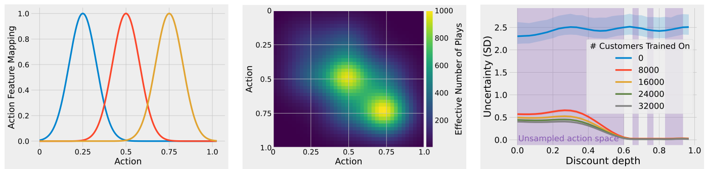
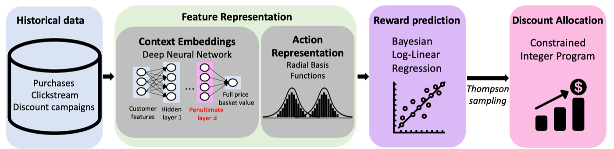
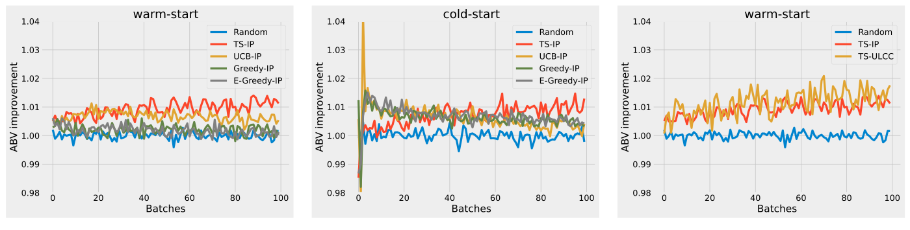

- 売上 +1.12%、報酬 +1.23%ASOS.com の A/B テストで、対照群と比べた改善率（p < 0.001 と p < 0.01）。対照群には深さごとの人数を DISCO と同じにして、割引をランダムに配った。
- 制約による低下 0.234%オフラインのシミュレーションで、学習のための行動だけは制約なしに選べる理想化した比較相手（TS-ULCC）と比べた、100 バッチ全体の平均バスケット額の低下。前半と後半で低下幅に有意な差はなかった。
- WAPE 0.134学習データより浅い深さだけを配った、種類の違うキャンペーンでの報酬モデルの誤差（Spearman の ρ = 0.461）。同じ種類の新しいキャンペーンでは 0.139、A/B テスト中は 0.133 だった。
割引の深さを選ぶ文脈付きバンディットとして定式化し、報酬には割引前の定価で数えたバスケット額を使う
価格や割引の最適化では、過去に実際に出した割引の結果しか観測できない。ランダムに割引を配ったデータを一度集めても、事業環境が変わればすぐに古くなる。論文はこの部分情報の問題に、探索しながら学ぶ文脈付きバンディットで取り組む。ただし実用には壁が 3 つある。割引の深さは連続なので行動の数が多いこと、運用チームが配り方に制約をかけること、そして割引が深いほど多く買うという負の価格弾力性をモデルが保つ必要があることである。
キャンペーンを 1 ラウンドとし、ラウンド \(t\) では顧客の一群とその文脈 \(X_{t,i}\) が与えられる。学習者は各顧客に候補の集合 \(\mathcal{A}_t = \{a_1, \dots, a_{K_t}\}\) から深さ \(a\)（\(a = 0.2\) なら 20% 引き）を選び、結果を観測してモデル \(g\) を更新する。予測する量は割引を適用する前の定価で数えたバスケット額 \(F_{t,i,a}\) の期待値である。
割引後の額 \(R\) が売上、値引き額 \(C\) が割引のコスト（markdown cost）にあたる。データでは、割引を深くすると定価ベースの額 \(F\) は単調に増えたが、割引後の額 \(R\) は必ずしも増えなかった。そこで単調な関係が見える \(F\) をモデル化し、\(R\) と \(C\) はそこから計算する。キャンペーン全体のコストはコードを使って購入した顧客の値引き額を合計したものである。
割引の深さを 3 つの放射基底関数で表し、近い深さどうしで学習を共有する
深さをそのまま 1 つの連続変数として線形モデルに入れると、深さと結果の関係が直線に限られる。深さを離散化して one-hot で表すと、隣り合う深さのあいだで情報を共有できず、次元も増える。バンディットの学習は行動の次元が増えるほど効率が落ちる。そこで DISCO は中心 \(\mu_z\) と幅 \(\alpha_z\) をもつ放射基底関数（RBF）で深さ \(a\) を低次元のベクトル \(\psi_2(a)\) に変える。
中心を 0.25、0.5、0.75 に置いた 3 つの RBF なら、0.4、0.6、0.8 の深さしか配っていなくても、その近くの深さについても情報が得られる（図2の左と中央）。RBF の数と幅は、予測の精度（WAPE）と、深さに対する単調性を保てるかで選んだ。論文が採用したのは中心 3 つ、\(\alpha = 20\) の設定である（深さの値は任意の単位に変換されている）。図2の右は深さ 0.6 未満を一度も含まないデータで学習したときの不確かさで、学習データが増えても、見ていない範囲では不確かさが大きいまま残る。

顧客の埋め込みと深さの特徴を掛け合わせたベイズ対数線形回帰から、トンプソン抽出で疑似報酬を引く
顧客の文脈を表す特徴は約 500 万人の過去 1 年分の購買・返品・コード利用・サイト行動（76 個の特徴量）から、定価ベースのバスケット額の対数を予測するニューラルネット（層の大きさは 64、16、6、1）で学習する。最後から 2 番目の層の 6 次元を顧客の埋め込み \(\psi_1(X)\) として使う。この学習に必要なデータは通常の営業で集まり、新しい割引キャンペーンは要らない。
埋め込み \(\psi_1\)、深さの特徴 \(\psi_2\)、その積をすべて並べた特徴 \(\psi(x, a)\)（次元 \(d = d_1 + d_2 + d_1 d_2\)）で、定価ベースの額の対数を線形に表す。積の項があるので、最適な深さは顧客の埋め込みによって変わる。係数 \(\theta\) にはガウス事前分布を置き、事後分布を閉じた形で更新する。
\(\bar V_t\) は特徴の外積を、\(B_t\) は特徴と \(\ln F\) の積を、これまでのラウンドの顧客について足し合わせたもので、\(\beta_t\) は探索の強さを決める。各顧客について、事後分布から候補の深さすべての \(\tilde F_{t,i,a}\) を引き、指数をとって金額に戻す。この疑似報酬の表を、次の整数計画に渡す。報酬モデルの学習には、割引の割り当てにランダムな要素が大きい 2 回のキャンペーンのデータを使った。

疑似報酬を整数計画に入れ、深さごとの配布人数を守りながら（重みつき売上 − 値引き額）の期待値を最大にする
ふつうのトンプソン抽出なら、顧客ごとに疑似報酬が最大の深さを選ぶ。それでは値引きの予算や、顧客に見せる割引の幅を運用側が管理できない。DISCO は運用チームが決めた深さの分布を制約として受け取り、次の整数計画で割り当てる。
- \(\tilde R_{i,a} = \tilde F_{i,a}(1-a)\) は売上、\(\tilde C_{i,a} = \tilde F_{i,a}\,a\) は値引き額の見積もりである。
- \(w\) は売上をどれだけ重く見るかの重みで、キャンペーンごとに運用者が変えられる。
- \(e_a\) は深さ \(a\) のコードを受け取った人のうち、それを使って購入した人の割合で、過去の平均を使う。顧客によらず深さだけで決まる。
- \(N_a\) は深さ \(a\) を配る人数の上限で、運用側がラウンドごとに決める。
値引きの総額は制約に入っていない。支出は深さごとの人数 \(N_a\) と重み \(w\) で抑える。論文は予算を制約に加える形へ簡単に拡張できると述べるが、その形では実験していない。
報酬モデルは学習データにない浅い深さでも精度を保ち、深さとともに定価ベースの額が増える関係をおおむね守った
論文は商業上の理由で深さ、売上、バスケット額、その増加率をすべて任意の単位に変換して報告している。深さの表現を変えても精度はほぼ同じ（WAPE はすべて 0.140、Spearman の ρ はすべて 0.475、小数第 3 位まで）で、違いは単調性に出た。深さを連続変数のまま入れる表現と、基準点からの距離で表す表現は単調な関係をうまく表せない。一方、中心 3 つで \(\alpha = 20\) の RBF は単調に近い関係を示した（図5の中央）。中心がもっと多い設定も単調性を示したが、特徴の次元が小さい中心 3 つの設定を選んだ。
顧客の埋め込みを作るニューラルネットの精度（WAPE 0.153、ρ = 0.409）は、ランダムフォレスト（0.153、0.409）や LightGBM（0.154、0.410）と同程度で、最小二乗回帰（0.160、0.346）より高い。2 回のキャンペーンで学習した報酬モデルは、同じ種類の新しいキャンペーンで WAPE 0.139（ρ = 0.438）だった。接触の経路（メールとサイト上）、コードの有効期間（1 か月と通常の 1〜2 日）、配った深さがどれも違うキャンペーンでも、WAPE 0.134（ρ = 0.461）と精度は落ちなかった。このキャンペーンの深さはどれも学習データより浅く、モデルは学習範囲の外へ外挿したことになる。深さを深くすると予測額が増えるという関係は、状態と行動の組の 90% 超で保たれていた。
![Three panels. Left: observed percentage increase over no discount against discount depth; full-price basket value rises almost monotonically to about 70, discounted basket value stays near 0 to 20. Middle: model predictions under continuous, Euclidean and six RBF encodings; RBF with three centres and alpha 20 and the six-centre RBFs rise with depth, others dip. Right: predicted full price against masked discount depth for the overall average, rising with a confidence band, and for three individual customers.](assets/fig3_elasticity.png)
オフラインのシミュレーションで、TS-IP は 100 バッチを通じて改善を続け、制約による低下は 0.234% にとどまった
評価には割引を実際にランダムに配ったキャンペーンのデータを使う。各深さの人数がそろうように顧客を抜き出し直し、手法の選んだ深さが実際の割り当てと一致した顧客だけで報酬を数える棄却サンプリング（Li ら 2010 の方法）で、制約のもとでの成績を見積もった。比較したのは、トンプソン抽出を整数計画と組み合わせた TS-IP と、同じ整数計画で制約した UCB-IP、ε-Greedy-IP、Greedy-IP、およびランダムである。5,000 人ずつのバッチでモデルを更新し、モンテカルロ 100 回の平均をとった。評価指標は割引後の平均バスケット額（ABV）で、ランダムを 1 とした比で示す。事前のデータなしで始める cold start と、以前のキャンペーンで学習してから始める warm start の両方を試した。
どちらの条件でも TS-IP は ABV を改善し続け、Greedy 系を上回った（cold start では上回るまでに数バッチかかった）。Greedy と ε-Greedy は warm start の直後は良かったが、偏ったデータを集めるためか、時間とともに成績が落ちた。UCB-IP も時間とともに下がり、論文は UCB の探索のほうが整数計画の制約に強く妨げられたと解釈している。
制約がどれだけ学習を妨げるかを測るため、論文は TS-ULCC（Unconstrained Learner, Constrained Consumer）という比較相手を作った。学習用の行動は制約なしに選んでモデルの更新だけに使い、報酬として数えるのは制約を守った行動の結果だけである。実際には取れない理想化した設定だが、TS-IP の ABV は TS-ULCC より 100 バッチ全体で 0.234% 低いだけだった（p < 0.001）。前半 50 バッチと後半 50 バッチで低下幅に有意な差はなかった（p > 0.05）。

ASOS.com の A/B テストで、同じ人数配分でランダムに配る対照群より、売上が 1.12%、報酬が 1.23% 高かった
ASOS.com の割引コードのキャンペーンで、対象の顧客全員を処置群と対照群にランダムに分けた。処置群の割引は DISCO が決め、対照群には深さごとの人数 \(N_a\) を同じにして割引をランダムに配った。対照群のやり方は既存のキャンペーンで使われている運用で、全員に同じ割引を出す場合よりコストを抑えられるが、それ以上の最適化はしない。商業上の理由で各群の平均は公表されず、改善率だけが報告されている。DISCO は対照群より売上が 1.12%（p < 0.001）、報酬（売上 − 値引き額）が 1.23%（p < 0.01）高かった。テスト中の予測精度も WAPE 0.133、ρ = 0.446 で、オフラインの評価と同じ程度だった。
対照群のうち、従来の画一的なキャンペーンと同じ深さを受け取った顧客は、ランダムに選ばれた部分集合になる。これを画一的な割引の代わりに使って比べると、DISCO は売上で 3.56%、報酬で 4.10% 上回った（どちらも p < 0.001）。なお、要旨は改善を「平均バスケット額で 1% 超」と書き、本文は売上の 1.12% として報告している。
処置効果ではなく報酬そのものを学び、値引きの総額ではなく深さごとの人数で支出を抑える
- 推定するもの：処置効果（アップリフト）ではなく、深さ \(a\) を渡したときの定価ベースのバスケット額の期待値 \(g(x, a)\) そのものである。割引なしの場合との差は推定にも最適化にも使わない。この論文を引用する Pillai（2026）と Lin ら（2027）も、DISCO が CATE ではなく報酬モデルを対象にしている点を自分たちとの違いに挙げている。
- コストの扱い：値引き額 \(C = F\,a\) はコードを使って購入したときだけ発生し、購入額に比例する（反応に依存するコスト）。整数計画では、見積もった値引き額に深さごとの過去の利用率 \(e_a\) を掛けて期待値にする。利用率は顧客によらず一定とみなしている。
- 処置：多値（キャンペーンごとに決めた深さの候補から 1 つ）。深さは本来連続なので、RBF で低次元に表して深さどうしで学習を共有する。
- 予算制約：値引きの総額は制約に入らない。深さごとの人数の上限 \(N_a\) と、売上と値引き額の重み \(w\) で支出を抑える。予算を制約として加える拡張は可能だと述べるにとどまる。
（解説者の注）目的関数 \(w\tilde R - \tilde C\) は \(\tilde R - \tilde C / w\) と同じ最適解をもつので、\(1/w\) は値引き額 1 単位の価格、つまり値引きの予算制約にかかるラグランジュ乗数の役割を果たす。ただし \(w\) は運用者が選ぶ値で、予算をちょうど使い切るように調整するわけではない。また、全員にどれかの深さを配る場合は、顧客ごとの共通の基準（割引なしでの額など）が合計の中で打ち消し合うので、深さの選び方に限れば、報酬を比べても深さどうしの効果の差を比べても結果は同じになる。一方、配らない顧客を残す場合や、配る相手そのものを選ぶ場合には、割引がなくても多く買う顧客が有利になり、増分（ROI）の順に配る割当てとは一致しない。論文自身はこの違いを論じていない。
@inproceedings{zhang2024disco,
title = {{DISCO}: An End-to-End Bandit Framework for Personalised Discount Allocation},
author = {Zhang, Jason Shuo and Howson, Benjamin and Savva, Panayiota and Loh, Eleanor},
booktitle = {Machine Learning and Knowledge Discovery in Databases. Applied Data Science Track (ECML PKDD 2024)},
series = {Lecture Notes in Computer Science},
volume = {14950},
pages = {33--49},
publisher = {Springer, Cham},
year = {2024},
doi = {10.1007/978-3-031-70381-2_3}
}
ページの数値と図は arXiv 2406.06433 v3（2024 年 6 月 12 日）による。出版版（Springer）の本文は確認していない。所属は arXiv 版の表記で、Zhang は現在 Tripadvisor、Howson の研究は ASOS.com でのインターン中のものと脚注にある。